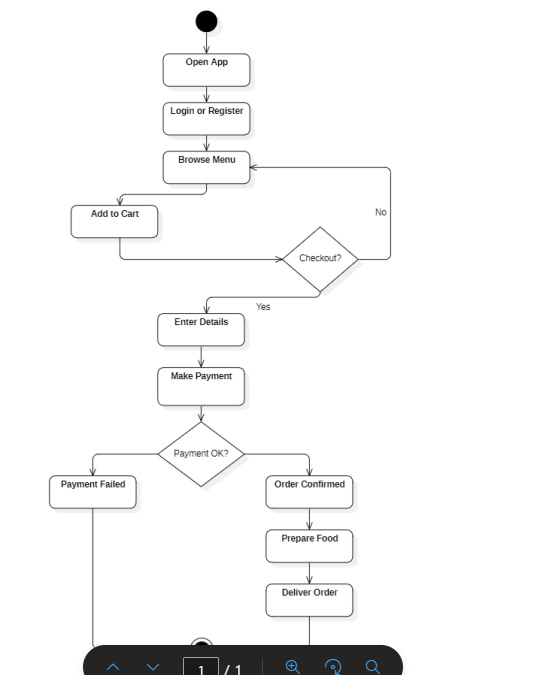

📚 UNIT 3 STUDY GUIDE
Use Case Diagram

Q: What is Use Case?
- Use Case: Sequence of actions performed by system that produces observable result of value to actor
- Key Characteristics:
- • Describes functional requirements
- • Focuses on external behavior of system
- • Written from user's perspective
- • Independent of implementation details
- Components: Use Case Name, Actor, Pre-condition, Post-condition, Main Flow, Alternative Flow
- Importance: Helps in requirement gathering, acts as base for test cases, improves communication with stakeholders
- Example: Withdraw Cash, Login, Place Order
Q: What is Use Case Diagram?
- Use Case Diagram: UML diagram representing relationship between users (actors) and system functionalities (use cases)
- Elements:
- 1. Actor
- 2. Use Case
- 3. System Boundary
- 4. Relationships (Include, Extend, Generalization)
- Purpose:
- • Captures system requirements graphically
- • Provides high-level system overview
- • Easy to understand by non-technical users
- • Helps identify system scope
- Features: Does not show internal logic, represents what system does (not how), one diagram can contain multiple use cases
Q: What is an Actor?
- Actor: Role played by user, system, or device that interacts with the system
- Characteristics:
- • Always outside system boundary
- • Can be human or another system
- • Represents a role, not a person
- • Can interact with multiple use cases
- Types of Actors:
- 1. Primary Actor: Initiates interaction (e.g., Customer)
- 2. Secondary Actor: Supports system (e.g., Bank Server)
- Representation: Shown as stick figure, named clearly
Q: What is System Boundary?
- System Boundary: Rectangle that encloses all use cases of a system, indicating what is part of the system
- Purpose:
- • Defines system limits
- • Clarifies system responsibilities
- • Helps avoid scope confusion
- Characteristics:
- • Actors remain outside
- • Use cases remain inside
- • Represents a single system
- Importance: Prevents requirement creep, clearly distinguishes internal vs external functions
Q: What is Include in Use Case Diagram?
- Include Relationship: One use case always uses another use case as part of its execution
- Notation:
- • Shown using dashed arrow
- • Labeled with <<include>>
- • Arrow points to included use case
- When to Use:
- • To avoid duplication
- • When a function is common and mandatory
- • Improves modularity
- Example: "Withdraw Cash" includes "Authenticate User" - Every time you withdraw cash, authentication must happen
Q: Various Relationships in Use Case Diagram
| Relationship | Description | Notation | Example |
|---|---|---|---|
| Association | Communication link between actor and use case | Simple solid line | Customer — Withdraw Cash |
| Include | Mandatory reuse of behavior | Dashed arrow with <<include>> | Withdraw Cash includes Authenticate User |
| Extend | Optional or conditional behavior | Dashed arrow with <<extend>> | Apply Discount extends Purchase Item |
| Generalization (Actor) | Inheritance between actors - child inherits parent behavior | Solid line with hollow arrow | Admin inherits from User |
| Generalization (Use Case) | Specialized version of use case | Solid line with hollow arrow | Online Payment specializes Payment |
- Summary:
- • Association: Who uses what
- • Include: Must happen
- • Extend: Happens sometimes
- • Generalization: Inheritance
State Diagram

Q: What is State Diagram?
- State Diagram: UML diagram representing dynamic behavior of an object by showing its states and transitions based on events
- Models reactive systems and state-dependent behavior
- Key Elements:
- • States (rounded rectangles)
- • Events (triggers)
- • Transitions (directed arrows)
- • Initial state (filled black circle)
- • Final state (bull's-eye)
- Importance: Models call lifecycle clearly, useful for telecommunication & real-time systems, helps detect invalid transitions
- Example: Telephone line (Idle → DialTone → Dialing → Ringing → Connected)
Q: Explain State, Event, and Transition (using Telephone Line Diagram)
- 1. STATE:
- Definition: Condition or situation in which an object exists for a period of time and performs certain activities
- Examples from Telephone Diagram:
- • Idle – Telephone line is free, handset on hook
- • DialTone – Dial tone provided after receiver lifted
- • Dialing – User entering digits
- • Ringing – Called phone is ringing
- • Connected – Call is established
- • BusyTone / FastBusyTone – Line or trunk is busy
- • Disconnected – Call is terminated
- 2. EVENT:
- Definition: Occurrence that triggers a change from one state to another
- Examples from Telephone Diagram:
- • offHook – User lifts receiver
- • onHook – User places receiver back
- • digit[n] – User dials a digit
- • validNumber – Dialed number is valid
- • timeout – No user activity
- • calledPhoneAnswers – Receiver picked by called party
- • calledPhoneHangsUp – Called party disconnects
- 3. TRANSITION:
- Definition: Movement of system from one state to another due to occurrence of an event
- Examples from Telephone Diagram:
- • Idle → DialTone (on offHook)
- • DialTone → Dialing (on digit[n])
- • Dialing → BusyTone (on numberBusy)
- • Dialing → Connecting (on validNumber)
- • Ringing → Connected (on calledPhoneAnswers)
- • Connected → Disconnected (on calledPhoneHangsUp)
- Notation: Source State --(Event)--> Target State
| Concept | What it describes | Example |
|---|---|---|
| State | What stage the phone is in | Idle, Ringing, Connected |
| Event | What action happens | Lift receiver, Dial number, Hang up |
| Transition | Movement from one stage to another | Idle → (offHook) → DialTone |
- Relationship: State describes system condition → Event triggers a change → Transition connects two states due to an event
Q: What are Composite States? Explain Categories
- Composite State: State that contains one or more nested states (substates) within it
- Allows hierarchical modeling, reducing complexity
- Key Points: Used when system state is too complex, represents group of related states, can contain transitions/events/actions, improves modularity
| Category | Description | Characteristics | Example |
|---|---|---|---|
| Sequential (Non-Concurrent) | Only one substate active at a time | Single flow, substates execute one after another, uses initial node | Call Handling: Dialing → Ringing → Connected |
| Concurrent (Parallel) | Multiple substates active simultaneously | Parallel execution, divided into regions (dashed lines), uses fork & join | ATM Transaction: Dispense Cash + Print Receipt + Update Account |
- Importance: Reduces diagram complexity, supports hierarchical modeling, improves clarity, useful for complex systems
Q: Relationship Between Class and State Model
- Class Model: Static structure | State Model: Dynamic behavior
- Key Relationships:
- 1. Class Defines Object: State model is always associated with a class; describes behavior of class instances
- 2. States = Attribute Values: States represent conditions based on class attributes (e.g., status = "Shipped" → Shipped State)
- 3. Events = Class Operations: Events triggered by operations/methods of class (e.g., confirmOrder() triggers New → Confirmed)
- 4. Transitions = State Changes: Caused by invoking class methods (e.g., cancelOrder() moves Confirmed → Cancelled)
- 5. State Model Defines Valid Order: Restricts when certain methods can execute (e.g., deliverOrder() cannot be called before shipOrder())
- 6. Actions Implement Behavior: Entry/exit/do-actions in states implemented using class methods
- 7. Complements Views: Class Model → What system is (attributes, operations) | State Model → How system behaves over time
- Importance: Ensures consistency, helps correct implementation, improves maintainability, avoids invalid state transitions
Activity Diagram

Q: What is Activity?
- Activity: Unit of work performed during execution of a system
- Represents behavior that executes a set of actions in particular sequence
- Characteristics:
- • Represents dynamic behavior
- • Focuses on flow of control
- • Can be sequential or concurrent
- • Used in Activity Diagrams
- Elements Associated: Initial Node, Activity/Action State, Decision Node, Fork & Join, Final Node
- Importance: Models business workflows, helps understand system processes, useful for requirement analysis
- Example: Insert Card, Validate Login, Dispense Cash
Q: Activities in ATM System
- Five Key Activities:
- 1. Insert ATM Card: ATM reads card details, verifies card validity
- 2. Enter PIN: User enters PIN
- 3. Validate PIN: System validates PIN with bank server
- 4. Select Transaction: User chooses operation (withdraw, balance, etc.)
- 5. Dispense Cash: Requested amount checked, cash dispensed to user
- Additional Activities: Update Account Balance, Print Receipt, Eject Card
- Process: Card → PIN → Option → Cash → Receipt (step-by-step)
Q: What is Activity Diagram?
- Activity Diagram: Shows workflow of stepwise activities and actions
- Models process flow, control flow, and business workflows
- Similar to flowchart but object-oriented
- Elements: Initial node (●), Activities (rounded rectangles), Decision nodes (◇), Fork/Join (thick bars), Final node (◎)
- Focus: What actions are performed and how they flow
- Use Cases: Business processes, algorithm flows, parallel processing, workflow modeling
- Advantages: Easy to understand, shows parallel activities clearly, suitable for business modeling
Q: Activity Diagram Components
| Component | Description | Symbol | Purpose |
|---|---|---|---|
| Initial Node | Starting point of workflow | Filled black circle ● | Marks beginning |
| Activity/Action | Single step or task | Rounded rectangle | Represents work unit |
| Decision Node | Conditional branching | Diamond ◇ | Choice based on condition |
| Fork | Split into parallel activities | Thick horizontal bar | Start concurrent execution |
| Join | Merge parallel activities | Thick horizontal bar | Synchronize threads |
| Final Node | End point of workflow | Circle with dot ◎ | Marks completion |
Sequence Diagram
Q: What is Sequence Model/Diagram?
- Sequence Model: Represents time-ordered interaction between objects in a system
- Shows how objects communicate with each other in specific sequence to complete functionality
- Characteristics:
- • Emphasizes order of messages
- • Shows object collaboration
- • Models dynamic behavior
- • Used during design phase
- Purpose: Understand object responsibilities, validate logic flow, identify missing interactions
- Focus: Message exchange between objects (who talks to whom and in what order)
Q: Components of Sequence Diagram
| Component | Description | Representation |
|---|---|---|
| Actor | External entity interacting with system | Stick figure |
| Object | Participating system components | Rectangle at top |
| Lifeline | Vertical dashed line showing object existence over time | Dashed vertical line |
| Message | Communication between objects | Horizontal arrow (solid) |
| Activation Bar | Shows execution period/duration when object is active | Thin rectangle on lifeline |
| Return Message | Shows response/result from called object | Dashed arrow |
| Control Flow | Order of messages (top-to-bottom) | Sequence of arrows |
- Importance: Clarifies system behavior, helps in code design, reduces ambiguity
- Each component shows: Who is involved, what they do, when they do it
Q: Compare Sequence Diagram and Activity Diagram
| Aspect | Sequence Diagram | Activity Diagram |
|---|---|---|
| Definition | Represents interaction between objects in time sequence | Represents flow of activities or actions |
| Focus | Message exchange between objects | Workflow and control flow |
| Primary Usage | Shows how objects communicate | Shows how a process flows |
| Time Aspect | Time shown top-to-bottom explicitly | Time is implicit |
| Main Elements | Objects, Lifelines, Messages, Activation bars | Activities, Decision nodes, Fork/Join |
| Representation | Vertical lifelines with horizontal messages | Flowchart-like diagram |
| Concurrency | Limited (using combined fragments) | Clearly shown using fork and join |
| Best Used For | Detailed object interaction | Business processes and workflows |
| Complexity | More detailed and technical | Simpler and more intuitive |
| Level of Abstraction | Low-level (design level) | High-level (analysis level) |
| Orientation | Object-oriented | Process-oriented |
- Summary:
- • Sequence Diagram: Conversation between objects, who talks to whom and when
- • Activity Diagram: Flow of steps in a process, what happens step-by-step
- When to Use: Sequence diagrams for detailed object interaction, Activity diagrams for workflow and process modeling